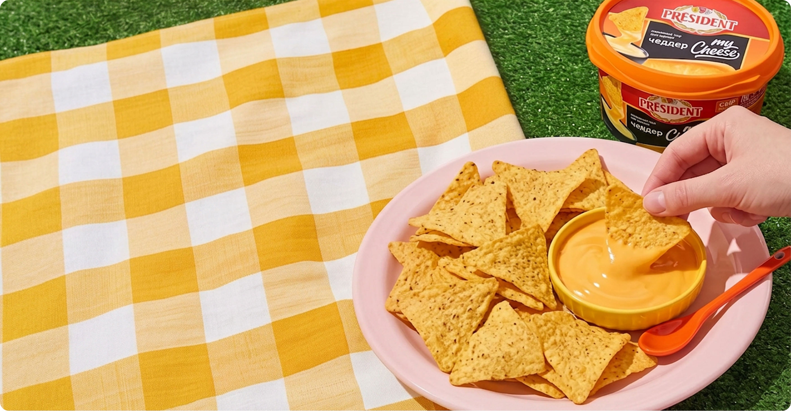

Идеальное дополнение к любой закуске
-

Просмотр любимого сериала
-

Быстрый перекус на пикнике или
в офисеБыстрый перекус
на пикнике или в офисе -

Встречи с родными и друзьями

Высокие стандарты качества
-

Сделан на основе полутвердого
сыраСделан на основе полутвердого сыра
-

Подходит для горячих и холодных блюд
-

Без растительных
жиров и искусственных красителейБез растительных жиров и искусственных красителей


Ароматный Чеддер
Классический, глубокий вкус настоящего чеддера. Безупречная пара для
хрустящих кукурузных начос и золотистого картофеля по-
деревенски
Классический, глубокий вкус настоящего чеддера. Безупречная пара для
хрустящих кукурузных начос и золотистого картофеля
по-деревенски

Пряная паприка
Уникальное сочетание классического сырного вкуса и ноток паприки создают идеальный баланс вкуса, который подходит к любым блюда, добавляя им глубину и пикантность!
Уникальное сочетание классического сырного вкуса и ноток паприки создают идеальный баланс вкуса, который подходит к любым блюда, добавляя им глубину и пикантность!

Вдохновляйтесь с Président
Откройте для себя новые грани вкуса.
Мы собрали идеи идеальных закусок, которые станут еще вкуснее с сырным соусом My Cheese
Откройте для себя новые грани вкуса. Мы собрали идеи идеальных закусок, которые станут еще вкуснее с сырным соусом My Cheese
-

Запеченные картофельные дольки
Пряные картофельные дольки с копченой паприкой, запеченные до румяной
корочки. Идеальная пара для насыщенного сырного соуса «Чеддер» President. -

Домашние наггетсы
Сочное куриное филе в золотистой хрустящей панировке прямо из духовки. Обмакивайте в соус «Чеддер» President и наслаждайтесь 100% домашним вкусом.
-

Пицца-шарики
Горячие шарики с тягучей моцареллой и пепперони под пряным чесночным маслом. Созданы специально для макания
в сырные соусы President со вкусом «Паприка» и «Чеддер».
Готовы попробовать?
Закажите новую линейку Président My Cheese прямо сейчас с быстрой доставкой или найдите на полках любимого супермаркета!

Купить на: